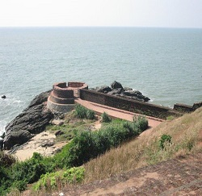
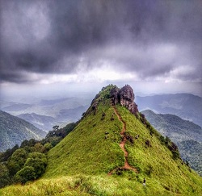
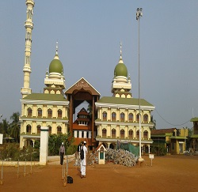

The fort is at a beautiful elevated location overlooking the Arabian Sea and is quite a nice area to walk around in with a lot of greenery and good views of the sea along the ramparts of the fort.
Read moreRanipuram is a beautiful hill station that comes under Kasargode, Kerala. Find what is the best time to visit, how to reach, Sightseeing, and where to stay. Ranipuram is the Queen of Grassland, a gorgeous place of Kerala. The breathtaking beauty of Ranipuram hill station of Kasargod is a major tourist attraction of Kerala. It is approx 750 m above the sea level of Western Ghat.
Read moreMalik Dinar Mosque is one of the oldest mosques in India, situated in Kasaragod district of Kerala state, south India.
Read more